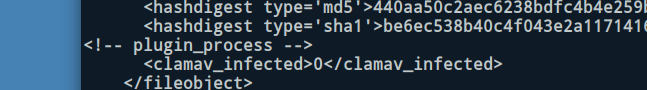

Running fiwalk with the ClamAV Plugin to Scan Disk Images for Viruses and Malware
The “Domex Gateway Interface” (DGI) is a plugin specification for fiwalk that enables metadata generated by other programs to be embedded in fiwalk’s output (for example, a DFXML file) as a key/value pair. BitCurator includes a plugin, ficlam.sh, that enables ClamAV to scan files identified within disk images when fiwalk is run. To do this, open a terminal and navigate to the .fiwalk directory with the following command:
cd ~/.fiwalk
This directory contains the ficlam.sh script, but before we run it we need to provide it with some configuration parameters in a ficonfig-formatted configuration file. This has the following layout:
# globpattern channel args*
.* dgi ./ficlam
This specific configuration pattern tells the program to scan all filenames with all extensions (*.*). If desired, we could replace this pattern with something more specific - for example, scan only files with the .exe file extension (*.exe). For now, we’ll create a new configuration file, clamconfig.txt, from the command line with this single line:
echo ‘*.* dgi ./ficlam.sh’ > clamconfig.txt
Now, run fiwalk with the appropriate flag to tell it to use the plugin:
fiwalk -c clamconfig.txt -X /home/bcadmin/SampleDataWithClam.xml /home/bcadmin/SampleData.E01
A new file, SampleDataWithClam.xml will be created in /home/bcadmin/. Each identified file result will now include the result of this plugin:
